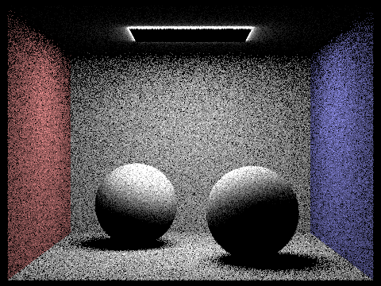

CS184 Assignment 3-1: Pathtracer
Abrar Karim
Overview
In this project, I implemented the core routines of a physically-based renderer using a pathtracing algorithm. Path tracing is a rendering technique that allows for the simulation of light in order to produce illumination in images. This was a really cool and extremely frustrauting project to work on since simple mistakes in the earlier stages had built up to be a huge pain in the later stages. It was also difficult to debug so it took a lot more time than I had expected for it, but nothing really beats the dopamine hit of waiting 20 minutes for a photo to render and it renders perfectly!
Part 1: Ray Generation and Scene Intersection
This part was to implement the functions that would generate rays as well as testing when triangles and spheres would be intersected by light.
In order to generate the rays, I had to complete the function Camera::generate_ray, which took in a double x and double y as parameters. In this function, I converted hFov and vFov into the radians by calling radians() on them both, then multiplied them by 0.5 and took the tangent of that to convert it into a point in the image plane. These new coordinations, alongside the origin (0,0), creates the ray that will be generated in camera coordinates. Now we have to convert it into word coordinates, which was done by adding the position of the camera to both coordinates and then multiplying it by the matrix c2w.
In order to implement the triangle intersection algorithm, I implemented the Moller Trumbore Algorithm. First, I calculated the normal vector of the triangle and then saw if there was an intersection with the ray. If an intersection is found, then I test to see if the intersection point is inside the triangle by looking at the barycentric coordinates of that interaction point. We know that if the alpha, beta and gamma are between [0,1] and sum up to 1, then the point is inside the triangle. If this is the case, then I updated the ray’s max_t to the point calculated so the intersection doesn’t occur again in the future.

|
|
|
|
|
Part 2: Bounding Volume Hierarchy
Trying to render the photos in the previous section, they took a really long time to render, and any scene that might have more than a couple hundred primitives might take a really REALLY long time to render. Thus in order to expedite this, I implemented a popular acceleratoin structure for ray tracing: bounding volume hierachu, which is a binary tree of geometric primitives.
For the BVH construction algorithm, I first go through each primitive and add it to my BBox to compute the bounding box of all the primitives, as well as add in a counter variable to count the number of primitives. Then I initialize a new BVHNode with that bounding box. If the number of primitives is less than or equal to the max_leav_size, then I know it's a leaf node, so I set the node’s start and end to the iterators passed in and return the node. If not, then I know it is an internal node. I find the largest dimension of the centroid box’s extend as the axis to split on. Then I go through each primitive and if the primitive’s centroid in the axis is less than the centroid box’s extend, then it goes in the left primitive list and vice versa for the right one. Then I recursively assign the left and right subtrees on the two primitive lists I made. Then in the case where all the primitives might get assigned to either side, I simply cut the list in half and assign it evenly to the left primitive list and the right primitive list and recursively assign them to avoid infinite recursion. I chose this heuristic specifically because it was simple to implement and didn't take too long. It also got the job done as it significantly sped up the rendering speed process.
|
|
|
|
|
|
The scenes I chose to compare were the dragon.dae, cow.dae and CBspheres_lambertian.dae scenes. The CBspheres_lambertian.dae had 14 primitives. Without BVH, it averaged 9.9 intersection tests per ray, and took a rending time of 0.035 seconds. With BVH, it averaged 8.2 intersection tests per ray and rendering time was 0.030 seconds. For the dragon, it had 10,012 primitives. Without BVH it averaged 21,249.584965 intersection tests per ray, with a render speed of 798.6144s. With BVH, it averaged 2.946197 intersection tests per ray with a render speed of 0.0681s! For the cow, it had 5,856 primitives. Without BVH, it averaged 1030.747625 intersection tests per ray with a render speed of 31.8840s With BVH, it averaged 2.604955 intersection tests per ray with a render speed of 0.1146s. Here we can see that even with a simple heuristic, it can make a really impactful improvement in rendering time, going from minutes to being done in less than seconds. A scene with smaller amounts of primitives don't see much improvement but as the number of primitives go up, it gets more and more useful. The BVH construction does add some pre-processing time since it has to go through the list of primitives but it is offset by the benefits it provides in saving time.
Part 3: Direct Illumination
Now that we have sped up the rendering time to mere seconds, we can get to the bulk of the project, which is modeling realistic shading. For this part we added in direct illumination, sampling either from the hemisphere or importance.
Uniform hemipshere sampling.
- First, make a local coordinate space using the intersection normal such that the normal to the source is at (0, 0, 1). We will use these in the BSDF functions.
-
Then create a sampling loop where we repeat it num_sample times.
- First, sample a random unit vector in the object space hemisphere using hemisphereSampler->get_sample().
- Second, convert the unit vector into world space using the o2w transformation matrix
- Third, create a new intersect struct and a ray with the origin being hit_p (the hit point) and the direction being the world_space vector. Also add to the origin a small offset of EPS_F * world_space vector for any floating numerical precision issues.
- Fourth, check if the ray intersects anything. If it does, then get the reflected emission for that ray by calling insec.bsdf->get_emission(), and the current BSDF by isect.bsdf->f(w_out, wj), where wj is the sampled random unit vector. Then add to the cumulative light by multiplying the current BSDF, the reflected emission and the cosine of the sampled random unit vector.
- Lastly, out of the for loop, divide the cumulative light by the pdf of the sampling scheme (which is 0.5 * pi), then divide by the num_samples to get the average.
- Finally return the light.
|

|
|
Importance sampling is done by sampling the light sources directly.
First, make a for loop for each SceneLight in the sample:
- If the light is a delta light, sample once. Otherwise, sample ns_area_light times.
-
For each sample:
- Initialize the pdf, wi, and distToLight variables.
- Find the radiance by calling SceneLight::sample_L(), and pass in the pdf, wi, and distToLight variables since this function will calculate those values.
- Check if the z coordinate of wi is negative, and if its not then continue
- Create a new ray with the origin at the hit point (hit_p) and a direction wi. Again, add to the origin a small offset of EPS_F * world_space vector for any floating numerical precision issues.
- Update the ray’s max_t to be the distToLight.
- Create a new intersect struct and see if the ray interests anything. If it doesn't, get the current BSDF by calling isect.bsdf->f().
- Then add to the cumulative light by multiplying the current BSDF, the radiance and the cosine of wi. Then divide it by the pdf to account for the sampling distribution.
- Then to get the average, divide the light by the number of light takes taken.

|
|

|
|
|
|
|
Looking at these images, we can see that as the number of light rays increases, the shadows become less and less noisy. This is because when we increase the number of light samples, we get a better approximation of the actual distribution of light in the scence, and thus theres a bigger chance we get more of the light and surface interaction.
Uniform hemisphere sampling will converge much slower and generally will have much more noise in its scenes than compared to lighting sampling. This is because in uniform hemisphere sampling, only a small portion of the rays from the hit point will actually intersect a light source directly due to how we're sampling thus, it will have more darker patches. In lighting sampling we only consider rays that contribute to the illumination of the surface point, and thus creates better renderings.
Part 4: Global Illumination
In this section, we finally add support for indirect lighting.
- First, initialize the illumination by calling one_bounce_radiance(), which was done in the previous part. Also initialize the ray depth to max_ray_deth so recursion will stop after max_ray_depth times.
- Do a check if the max_ray_depth is less than 1, and if it is, terminate the function and return the light.
- Also terminate with some probability due to Russian Roulette. I used (1.0 - 0.4) as the probability. Also do a check to see if the depth of the ray is the max_ray_depth.
- If those checks pass, then initialize the variables wi and pdf. Then, take a sample from the surface BSDF by calling isect.bsdf->sample_f(), which will compute the sampled wi and the pdf and return the BSDF.
- Then convert wi into the world space coordinates and pass in the origin (which is the hit point offset by EPS_F * world_space vector), then the world_space vector, then lastly the depth (which is the current depth - 1 since we are doing a recursive call).
- Then create a intersect struct, and see if the new ray intersects the bvh, and if it does, get the radiance of the ray by recursively calling at_least_one_bounce_radiance() on the new ray. Additionally, add to the cumulative light by multiplying by the current BSDF as well as the cosine of wi.
- Then we divide by the pdf and 0.35 for any bias.
For the edge case of when isAccumBounce = false, the light will be reset to the monte carlo sum of the next bounce so when we terminate the function, we keep only the radiance from the last bounce.
|
|

|

|
|
Here, we can notice that with the indirect illunminion, the spheres are covered because the surrounding walls are reflected onto the spheres and as the number of bounces increase, the intensity of the reflection will decrease. However, you will notice the opposite for direct illunminion (the top of the spheres and walls have strong highlights) and that's because the first ray of light can't hit places covered by the spheres or behind the ceiling.

|

|

|

|
|
|
In the second bounce of light, it is much brighter than the third one, specifically the underside and the front of the rabbit. On the other hand, the third bounce shows areas behind the bunny being lighter. This is because after more bounces, there is more light that will bounce off behind the bunny vs the front of the bunny will be rendered more the first few bounces and then taper off. When we add up these bounces, we see that the quality of the image is better since it will take into account the global illumination, not just direct light intersecting the objects.
Part 5: Adaptive Sampling
Outline the adaptive sampling strategies you employed to improve rendering efficiency and image quality, along with any results or comparisons.
 |
| Image description or caption |